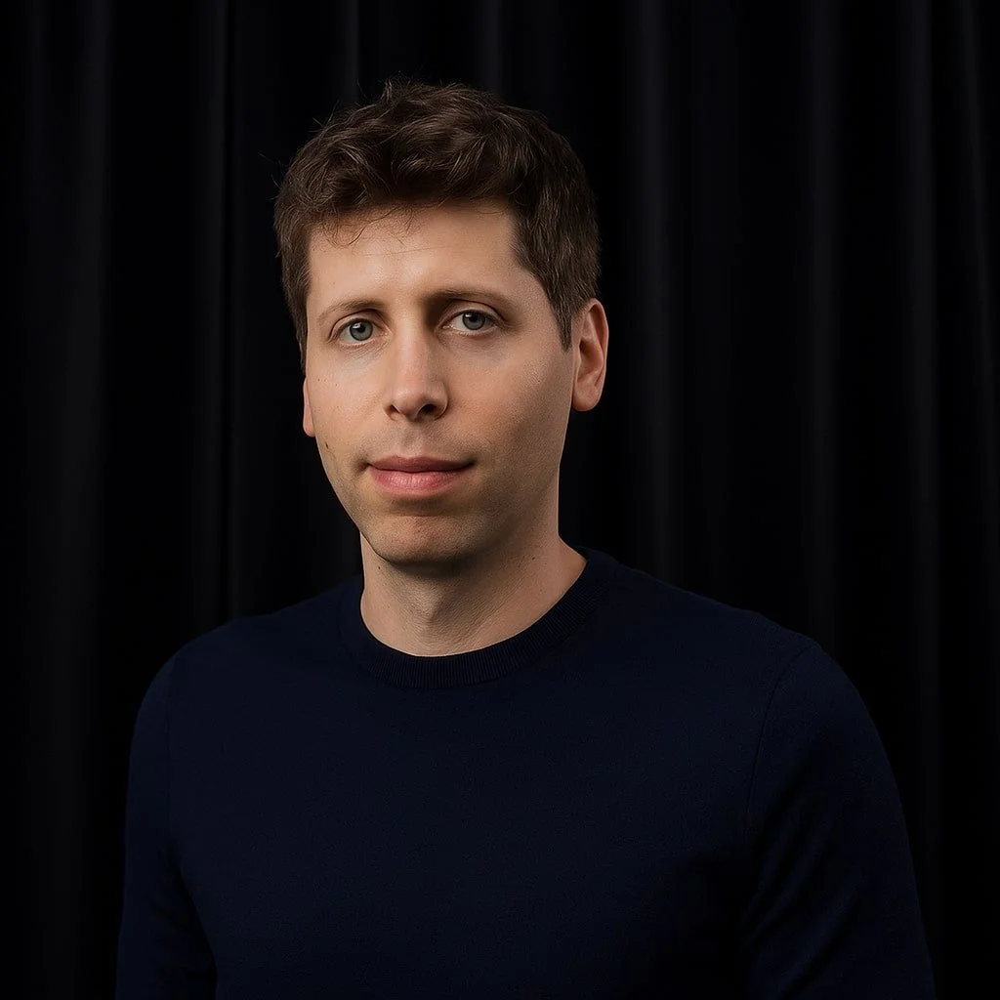
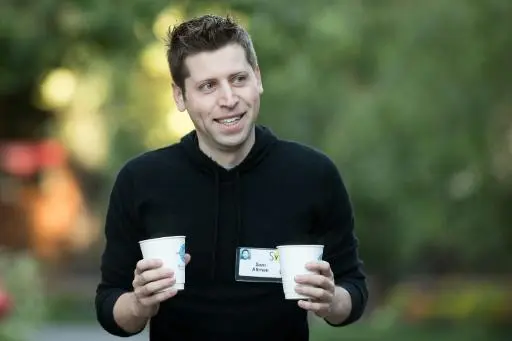

Samuel Harris Altman (Chicago, Illinois; 22 de abril de 1985), conocido como Sam Altman, es un empresario, inversionista, programador y bloguero estadounidense.[2] Es director ejecutivo de OpenAI y expresidente de Y Combinator, y se le considera una de las figuras principales en el desarrollo de la inteligencia artificial.[3][4][5][6] Su patrimonio neto actual es de 2100 millones de dólares, de acuerdo con Forbes.

Altman creció en San Luis (Misuri), en una familia judía, como el mayor de cuatro hermanos. Su madre es dermatóloga y su padre era un agente inmobiliario. Recibió su primera computadora a la edad de ocho años.[8] Asistió a la escuela secundaria John Burroughs y estudió Ciencias de la Computación en la Universidad de Stanford hasta que abandonó los estudios en 2005.[9] En 2017, recibió un título honorario de la Universidad de Waterloo.